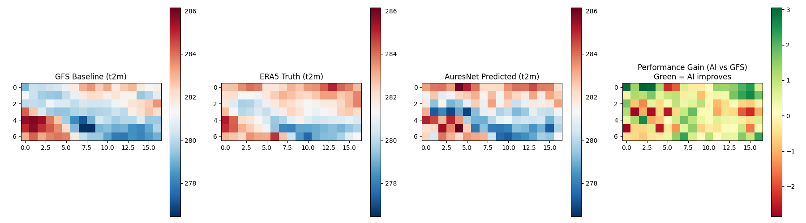
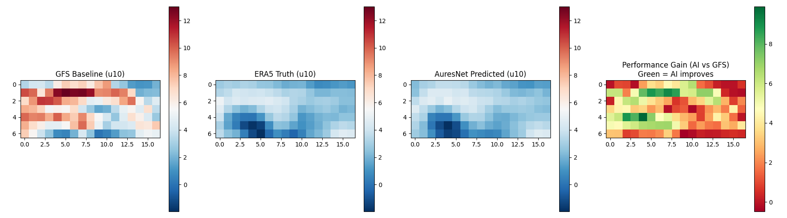
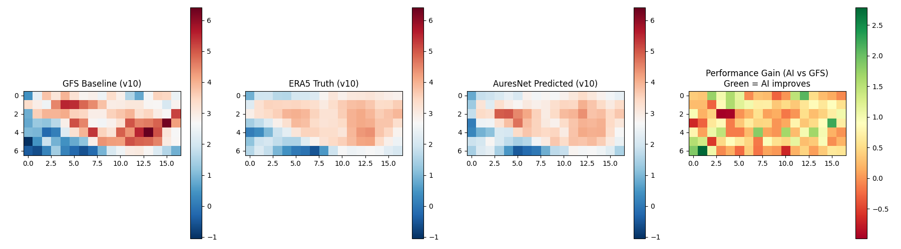
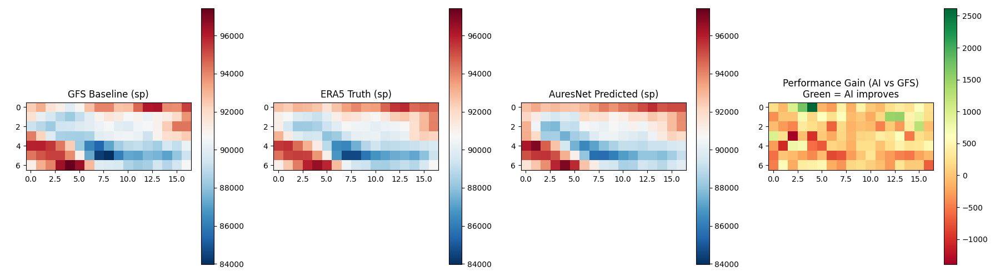
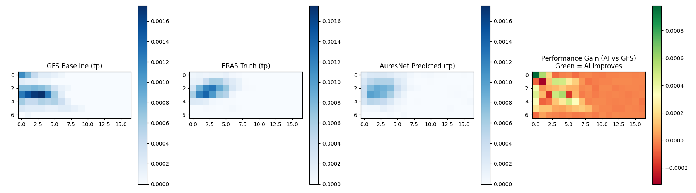
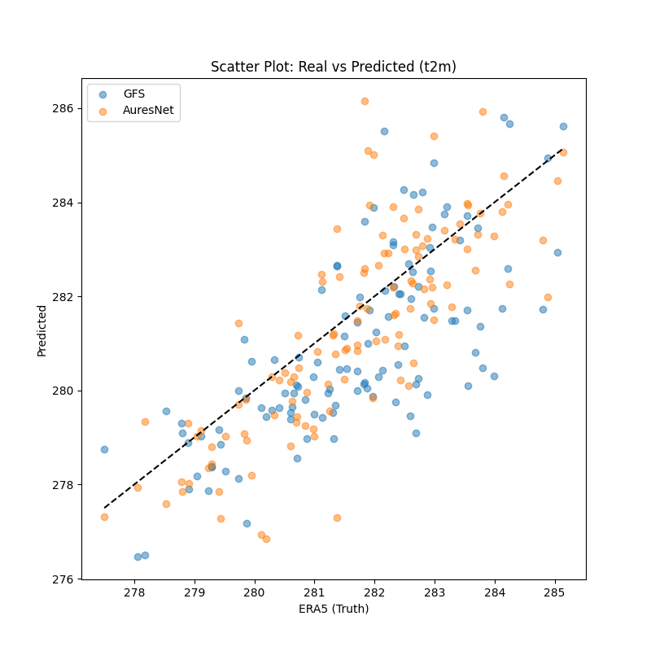

AuresNet-DZ: AI-Enhanced Weather Downscaling for Algeria
This report analyzes the performance of AuresNet-DZ against the GFS baseline for the date: ....
Regional Weather Summary (Forecast Mode)
Metrics Table
| Variable |
Source |
RMSE |
MAE |
Bias |
Improvement |
4.1. Performance Metrics
Metrics defined for evaluation:
- RMSE (Root Mean Square Error): Measures the standard deviation of residuals.
- MAE (Mean Absolute Error): Average magnitude of errors in a set of predictions.
- Bias: Indicates if the model consistently overestimates or underestimates.
4.2. Comparative Analysis: AI vs GFS Baseline
Key Insight: AuresNet shows significant improvements in the mountainous regions of the Aures, where coarse GFS (0.25°) struggles with local orographic effects.
Temperature (t2m) Comparison

Performance Gain Map: Green areas indicate where AuresNet reduced the error compared to GFS.
Wind U-component (u10)

Wind V-component (v10)

Surface Pressure (sp)

Total Precipitation (tp)

4.3. Uncertainty & Error Visualization
Scatter Plot: Real (ERA5) vs Predicted (AuresNet)

T2M Scatter: Comparison of model alignment with ground truth (ERA5) versus the GFS baseline.
Thesis Summary
The results demonstrate that by leveraging high-resolution topography and ERA5 reanalysis via a UNet++ architecture, we can effectively downscale GFS forecasts and correct systematic biases in the complex terrain of Algeria.